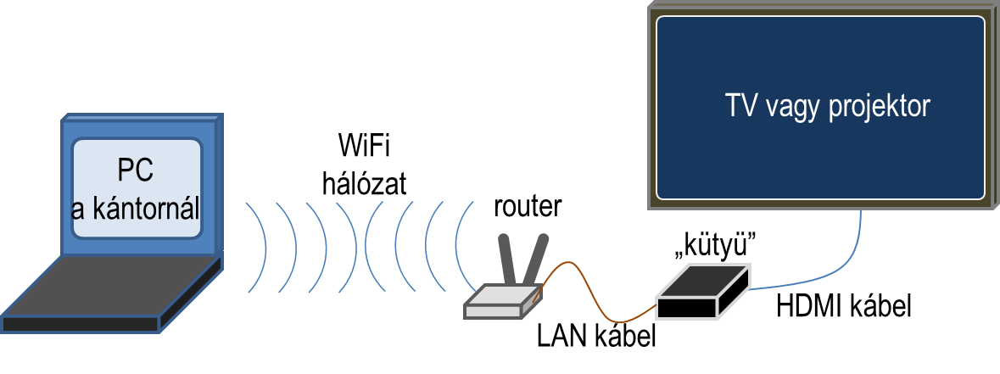
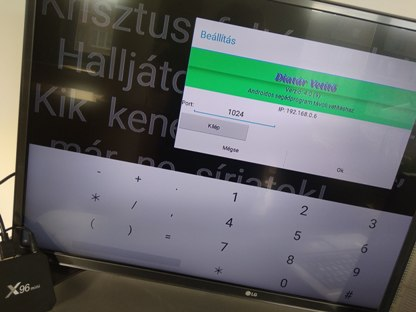
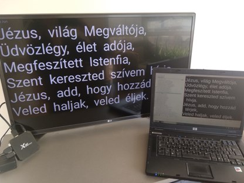

Androidos „okos” eszköz és a többgépes üzemmód

A Diatár legegyszerûbb és leggyakoribb telepítési módja az úgynevezett egygépes konfiguráció, melynél a program egyetlen, két videókártyás számítógépen fut és a második (külsõ) képernyõ képe analóg VGA (vagy újabban HDMI) jelként van elvezetve a vetítõ eszközig. Ennek a klasszikus megoldásnak azonban hátrányai, korlátjai is vannak.
Korszerûbb és rugalmasabb megoldásnak ígérkezik a többgépes üzemmód használata, ami IP alapú digitális kapcsolatot teremt a vezérlõ gép és vetítõ eszköz(ök) között. Elterjedésének azonban eddig jelentõs akadálya volt, hogy több számítógép kell hozzá. A további – általában a vetítõt vezérlõ gép(ek) – nem csak hogy megdrágították a rendszer kialakítását, de elhelyezésük (pontosabban inkább eldugásuk) a vetítõ eszköz mellett is gondot jelentett. Szerencsére azonban változnak az idõk, itt vannak az Android alapú okos eszközök, és elkészült a Diatár-Vetítõ androidos változata is: a DiaVetítõ!
A megoldás lényege, hogy magát a vetítést megvalósító Diatár-Vetítõ szoftvert futtassuk olcsó és már mindenki által elérhetõ androidos eszközön (1. ábra). Ez az eszköz lehet akár beépítve magába a (méregdrága) vetítõ eszközbe – és ekkor Okos-Projektornak ill. Okos-TV-nek hívják –, de vehetünk egy önálló »kütyüt« is, ami ugyanúgy ellátja a második számítógép feladatát. Az ilyen „kütyük” széles körben nem eléggé ismertek, ezért kicsit bemutatom õket. Ezek lényegében olcsó, pici számítógépek, melyeknek kicsi az áram fogyasztásuk, hangtalanok és gyakorlatilag semmilyen karbantartást sem igényelnek. Nevezik õket Smart TV Box-nak, MediaBox-nak ill. Mini PC-nek is; vagy szimplán: TV-okosítónak. Kicsi, fekete, kb. 10x10cm-es dobozka, sokféle csatlakozóval az oldalán. Általában közvetlenül kínai webáruházakból kb. 30 US$ (azaz 8000 Ft!) -ért lehet beszerezni õket. Érdemes körülnézni az õket támogató magyar weboldalakon is.
Nagy a választék belõlük, de számunkra a legegyszerûbbek is megfelelnek, hiszen csupán egy egyszerû és kicsi programot – az Androidos DiaVetítõ-t – fogjuk rajta futtatni. Nekem egy „X96 mini”-m van kb. egy éve és ez alapján írom ezt a bemutatót. Hangsúlyoznom kell azonban, hogy a tapasztalataimat csak otthoni használat, tesztelés során szereztem (lásd 2. ábra), valódi – pl. templomi – környezetbeli alkalmazásról nincs ismeretem.
Magáról az eszközrõl:
Ahogy én elképzelem a gyakorlati alkalmazást:
Vezérlõ számítógépnek elég egy régi, de halk PC vagy laptop. (Linuxot használva még az operációs rendszer költségeit is megspórolhatjuk.) A klasszikus megoldás: fixen beépítve az orgona mellé. Vagy most már lehet az androidos Diatár applikációt használni okostelefonon vagy tableten.
A vetítõ eszköznek, ami általában projektor vagy TV, nem kell „okos”-nak lennie. (Ráadásul nem is minden okos TV androidos!) Utóbbiakért általában aránytalanul többet kérnek el és ráadásul ha a rajtuk levõ Androidot már nem támogatja a gyártó, akár ki is dobhatjuk õket. Használjuk inkább az itt bemutatott „kütyüt” a normál projektor vagy TV felokosítására, második számítógépnek. Ha a DiaVetítõ programot automatikusan indítjuk el (pl. az „AutoStart – No root” segédprogrammal; de van rá beépített opció is a programban), akkor semmilyen napi szintû hozzáférés nem szükséges, így nyugodtan elrejthetjük nehezen hozzáférhetõ helyekre is, ill. akár a TV hátuljára is felragaszthatjuk.
A két gép (vezérlõ és vetítõ) közötti kapcsolat már érdekesebb. Sokan szeretik használni a WiFi-t. Elõnye, hogy nem kell sehol sem drótozni, ráadásul rugalmas a rendszer, mert bárhonnan lehet vezérelni az általában fixen telepített vetítõt. Pl. egy gitáros misén a fiatalok a padsorokból maguk is kivetíthetik a diákat a saját laptopjukról (vagy akár okostelefonról), nem kell a kántor eszközeihez hozzányúlniuk. Probléma lehet azonban az áthidalandó távolság. Egy nagyobb méretû templomban szinte biztosan kelleni fog valamilyen komolyabb külsõ antennás megoldás, a „kütyü” saját beépített WiFi-je nem lesz elég. Ezért fontos a kütyün a LAN csatlakozó, mert így egy külsõ antennás routerhez köthetjük egy rövid Ethernet kábellel. A routernek mûködnie kell internet kapcsolat nélkül is, hiszen mi csupán egy helyi hálózatot akarunk kiépíteni a két gép összekapcsolására!
A WiFi másik hátránya a zavar-érzékenység. Ezen is segít az vezetékes hálózat. Az Ethernet kábel viszonylag olcsó és mindenhol elérhetõ. Drótot kihúzni mindenki tud és ráadásul nem megy tönkre.
A hálózat típusának eldöntéséhez azonban egy új szempont is felmerült. Egyre több helyen szeretnének egyszerre több vetítõ eszközre is kivetíteni, mert az egy helyen megjelenített képet nem lehet jól látni mindenhonnan. Ez vezetékes hálózattal még nehezebben oldható meg, míg a WiFi-s megoldás szinte adja magát. Itt a két- ill. több-gépes üzemmód egy másik nagy elõnye is megmutatkozik, ugyanis a vetítõ eszközök akár különbözõ képernyõ arányúak is lehetnek, hiszen minden vetítõ eszközhöz tartozik egy saját számítógép, ami dinamikusan, az általa meghajtott képernyõ jellemzõihez alakítja, szabja át a dia tartalmát. (A Diatár PC-s változata is hamarosan támogatni fogja a több vetítõ egyidejû vezérlését.)
Talán ez a kis bemutató segít abban, hogy – a hagyományos megoldásoktól elrugaszkodva – találjunk olcsó és mindenki számára egyszerûen kivitelezhetõ megoldást templomainkban az énekszöveg kivetítésére.
2019. január
afo
{kind=link}
{kind=link}